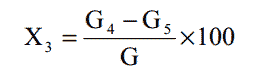

试样经盐酸、硝酸加热分解后，酸不溶部分用重量法测定。
1.盐酸。
2.硝酸。
3.定量滤纸：中速。
4.硝酸银溶液： 1g 硝酸银，用水溶解，加 1mL 硝酸，用水稀释至 100mL。
1.箱式电阻炉： 1000℃。
2.电阻炉温度控制器： 1～1000℃。
3.砂浴。
4.分析天平：感量： 0.0001g。
1.将测定灼烧减量后的试样，移入 100mL 瓷蒸发皿中，加少量水调成糊状。
2.慢慢加入 10mL 盐酸，于砂浴上蒸干，再加入 10mL 硝酸，再加热蒸干。
3.取下瓷蒸发皿加入 10mL 盐酸，及约 50mL 温水，煮沸，充分搅拌后趁热用
中速定量滤纸过滤，用１％硝酸溶液洗涤，再用热水洗涤到滤液中不含氯离子为止（用硝酸
银检验。） 滤液收集于 250mL 容量瓶中，冷却后用水稀释至刻度，摇匀。
4.将滤纸移入预先恒重的瓷坩锅中，于电炉上小火灰化后，于 950±10℃下灼
烧至恒重。
酸不溶物的含量 X3（ %）， 按下式计算：

式中：Ｇ4——灼烧后残渣和坩锅的重量，克；
G5——坩锅的重量，克；
G——试样的重量，克。
平行测定两结果差不大于 0.5%。
取平行测定两结果的算术平均值，作为垢样酸不溶物含量。